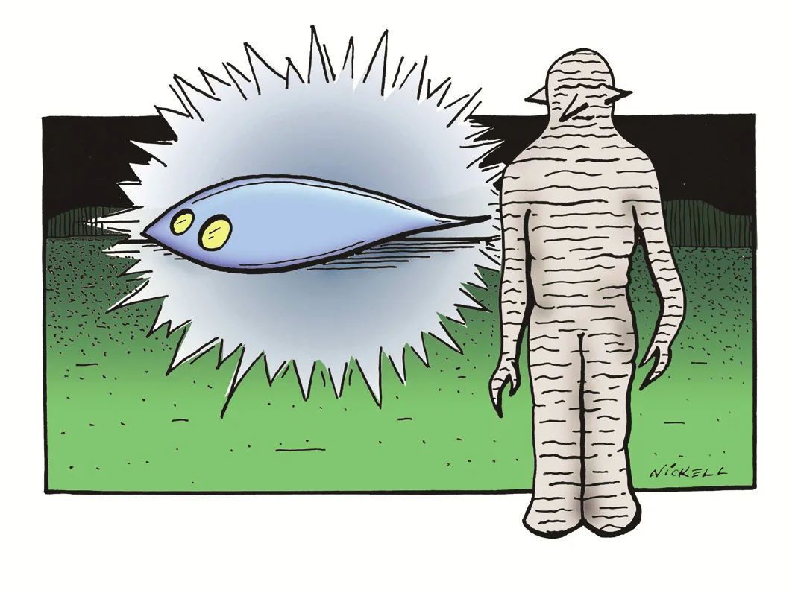

Among reports of extraterrestrial encounters, the claim of two Mississippi men to have been taken aboard a flying saucer remains controversial. This case study reveals what was really behind the encounter: a hypnagogic experience.
Charles Hickson, the chief claimant in the Pascagoula,
Mississippi, UFO abduction case, died of a heart
attack on , at the age of eighty. Until his death he maintained the truth of his alien
encounter—part of the UFO “flap” of Curtis Peebles: Watch the Skies! A Chronicle of the Flying Saucer
Myth, Berkley Books, New York, , pp. 241–45. It has remained
(after the Betty and Barney Hill case of ) the second most famous UFO-abduction case in history,
according to UFO
historian Jerome Clark Jerome Clark:
The UFO Encyclopedia, vol. 2, Omnigraphics, Detroit, Michigan, ,
p. 714.
Hickson, then forty-two, was fishing from an old pier on
the Pascagoula River with a friend,
nineteen-year-old Calvin Parker Jr., on the night of . Hickson
claimed they heard a zipping
sound and encountered a glowing object—an elongated UFO—hovering above the ground. Three robot-like aliens exited from the craft;
although they were gray humanoids just over
153 cm tall, they were otherwise of a type not reported before or since Joe Nickell: Tracking the Man-Beasts, Prometheus Books, Amherst, New York, : “Alien Likeness” (with pictorial chart, “Alien Time Line”), pp.
184–86: each entity lacked a neck, exhibited only slits for eyes and mouth, had a nose and ears that were
sharply pointed protrusions, and possessed clawed hands. The legs were joined, pedestal-like, and the entity glided
(see Figure 1).

The two men claimed they were taken aboard the spacecraft, where they were examined, after which they were returned to their fishing site. Unnerved, they sat in a car to regain their composure (with Hickson, at least, drinking whiskey), then reported their experience to the sheriff.
Although the UFO reported by the men had apparently not been seen by people on the heavily traveled nearby
highway Kevin D. Randle: “Pascagoula (Mississippi) abduction”, in
Ronald D. Story: The Encyclopedia of Extraterrestrial Encounters, New
American Library, New York, , pp. 423–24, there had been other UFO
sightings in the area, including on the night in question.
The UFOs were variously described—some saw a helicopter-like object; one person reported a supposed experiment
from an air force base; and so on Jerome Clark: The UFO
Encyclopedia, vol. 2, Omnigraphics, Detroit, Michigan, , p. 715
Ralph Blum, with Judy Blum: Beyond
Earth: Man’s Contact with UFOs, Bantam Books, New York, , pp.
14–19.
The pair’s veracity was accepted by UFO believers J. Allen Hynek of the Center for UFO Studies (CUFOS) and James Harder of the Aerial Phenomena Research Organization (APRO), both of
whom rushed to interview the “abductees.” Harder tried unsuccessfully to hypnotize the men Jerome Clark: The UFO Encyclopedia, vol. 2, Omnigraphics,
Detroit, Michigan, , p. 717 but did conclude they had experienced
an extraterrestrial phenomena [sic].
The men were later hypnotized by
another (see Hickson, Charles, and
William Mendez: UFO Contact at Pascagoula, Wendelle C.
Stevens, Tucson, Arizona, ). Hynek believed the
pair had at least had a very real, frightening experience.
Ralph
Blum, with Judy Blum: Beyond Earth: Man’s Contact with UFOs, Bantam
Books, New York, , pp. 24–25 The sheriff’s department also felt the
men were telling the truth, and Hickson requested and passed a lie-detector test arranged by
the agent with whom the men had signed a contract to promote their story. Parker suffered a breakdown and was
briefly hospitalized Jerome Clark: The UFO Encyclopedia,
vol. 2, Omnigraphics, Detroit, Michigan, , pp. 714–17.
The men’s fantastic report drew much skepticism. Famed
UFO skeptic Philip J. Klass noted discrepancies in Hickson’s account (for instance, once
referring to the creatures as having a hole
for a mouth but later calling it a slit
). Klass also
pointed out that the lie-detector test was conducted by an inexperienced
polygraph operator and that Hickson
refused to take another administered by an expert police examiner. Based on other evidence—including the fact that
Hickson had once been fired for improperly obtaining money from employees under his supervision—Klass concluded the
case was a hoax Philip J. Klass: UFOs Explained, Vintage Books, New York, () , pp. 347–69 Philip J. Klass: UFO Abductions: A Dangerous Game, updated
edition, Prometheus Books, Buffalo, New York, , pp. 18–19.
So which was it: a genuine alien abduction
or a hoax? Or is that a false dichotomy? In
reviewing the case, I thought there might be another possibility: the two men, who might have been drinking before
the incident (as Hickson admitted he was after), might have
dozed off in any case. Hickson could then have entered a hypnagogic (“waking dream”) state, a trancelike condition
between waking and sleeping in which some people experience hallucinations, often with bizarre imagery, including
strange beings (aliens, ghosts, etc.). This state may be accompanied by what is called “sleep paralysis” (the
body’s inability to move due to still being in the sleep mode). In fact, Hickson not only reported the bizarre
imagery but also said that the aliens paralyzed
him before carrying him aboard the UFO in what sounds like a hypnagogic fantasy.
The imagery might even have been triggered by Hickson actually sighting something—almost anything—that, while he
was in the waking-dream state, appeared to be a “UFO.” During a recorded interview with Sheriff Fred Diamond Ralph Blum, with Judy Blum: Beyond Earth: Man’s Contact with UFOs, Bantam Books, New York, , pp. 30–36, Hickson described the UFO as a blue light,
adding:
It circled a bit.
He emphasized it was blue, saying, And you think you dreamin’ about something
like that, you know
(original emphasis). Hickson also reported that it made a little buzzin’
sound—nnnnnnnnnn, nnnnnnnnn.
Ralph Blum, with Judy Blum: Beyond Earth: Man’s Contact with UFOs, Bantam Books, New York, , p. 31 Bright lights and odd noises can also be part of the
waking-dream experience, as can the sense of floating Andreas
Mavromatis: Hypnagogia: The Unique State of Consciousness between Wakefulness and Sleep, Routledge
& Kegan Paul, New York, , p. 148. Hickson stated, I couldn’t
resist [the extraterrestrials], I just floated—felt no sensation, no pain.
Ralph Blum, with Judy Blum: Beyond Earth: Man’s Contact
with UFOs, Bantam Books, New York, , p. 32 These phenomena,
coupled with the paralysis and fantastic imagery, corroborate the diagnosis of a hypnagogic experience.
Of additional corroborative value are other factors, including Hickson’s description of the aliens as speaking
inside his head Jerome Clark: The UFO Encyclopedia, vol. 2,
Omnigraphics, Detroit, Michigan, , p. 715, because a feature of
hypnagogia is the sense of perceiving with whole consciousness.
This explains the bright lights and clarity
of his experiences, since hypnagogic visions often seem particularly illuminated, vivid, and detailed Andreas Mavromatis: Hypnagogia: The Unique State of
Consciousness between Wakefulness and Sleep, Routledge & Kegan Paul, New York, , pp. 14–52, 148.
But if Hickson had a hypnagogic experience, what about Parker?
Actually, he need not have been in such a state himself because, as he told officers, he had passed out
at the beginning of the incident and failed to regain consciousness until it was over United Press International: wire-service story, “Creatures” (Pascagoula, Mississippi, ), in Ralph Blum, with Judy
Blum: Beyond Earth: Man’s Contact with UFOs, Bantam Books, New York, , pp. 9–11. Later he “remembered” bits and pieces of the alleged
encounter. This would be consistent with an example of folie à deux (a French expression, the
“folly of two”) in which a percipient convinces another of some alleged occurrence (as by the power of suggestion,
the force of a dominant personality, or the like) or the other person simply acquiesces for whatever reason. (Young
Parker’s position was vulnerable: he had recently joined the shipyard where Hickson worked and was residing with the
Hicksons.) It would have been significant if Parker had himself been in a hypnagogic state, since suggestibility
is high during this state.
Robert M. Goldenson: The
Encyclopedia of Human Behavior: Psychology, Psychiatry, and Mental Health, Doubleday, New York, , vol. I, p. 574 Interestingly, when the two men were left alone in a room
at the sheriff’s office, where they were secretly tape recorded Jerome
Clark: The UFO Encyclopedia, vol. 2, Omnigraphics, Detroit, Michigan, , p. 716, they did not make incriminating statements as they might have
if perpetrating a hoax but acted more like people comparing notes to see if they were in agreement with each
other.
Still, some of Hickson’s behavior is questionable. For example, he kept adding to his story. He claimed on a television show
a month later that the interior lights of the UFO had been so intense as to cause eye injury
lasting for three days, although an extensive hospital examination the day after the incident had shown no such eye
damage Philip J. Klass: UFOs Explained, Vintage Books, New
York, () , pp. 349–50. But this
is a familiar story: even accounts of the truest occurrences gain distortions and embellishments over time, so why
should Hickson’s story be any different? Ufologist Kevin
D. Randle Kevin D. Randle: “Pascagoula (Mississippi)
abduction”, in Ronald D. Story: The Encyclopedia of Extraterrestrial
Encounters, New American Library, New York, , pp. 423–24 insists
Hickson’s alterations went beyond that.
Specifically, he says, These changes seemed to be in response to
criticisms and appeared to be an attempt to smooth out rough spots in the story.
But to me that just signals
Hickson’s defensiveness brought on by people ridiculing him—not proof of initial hoaxing.
When all the facts are weighed, the preponderance of evidence appears not only to favor the hypothesis involving the hypnagogic state but to provide corroboration as well. The realization may not benefit the late Charles Hickson, but it could help others who hear of supposed alien abductions to rest in peace.
I am grateful to Major James McGaha, CFI Libraries Director Tim Binga, and Julia Lavarnway, managing editor of the Skeptical Inquirer, for help with this article.